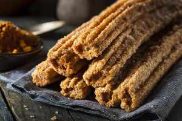

CHURRO

INGREDIENTES
1/2 Taza de Agua
1 Lata de Leche Evaporada
1 Barra de Mantequilla (90 g)
1 Cucharada de Esencia de vainilla
2 Tazas de Harina de trigo pasadas por un colador
1/4 Taza de Azúcar
4 Huevos
Aceite de maíz para freír
1 Lata de Dulce de Leche
1 Taza de Azúcar
INSTRUCCIONES
PASO 1
En una olla, calienta el agua con la Leche Evaporada CARNATION® CLAVEL®, la mantequilla y la esencia de vainilla hasta que se funda la mantequilla; agrega la harina de trigo, ¼ taza de azúcar y mezcla fuertemente con una pala hasta formar una masa que se despegue de la olla.
PASO 2
Coloca en una batidora la masa y bate hasta entibiar; agrega los huevos uno a uno hasta que quede una masa tersa; colócala en una manga con una duya rizada y refrigera por 30 minutos. Con cuidado, presiona la manga para formar los churros y corta con unas tijeras cuando tengan el tamaño deseado; fríelos en el aceite caliente hasta que doren ligeramente, colócalos sobre papel absorbente para retirar el exceso de grasa.
PASO 3
Con un palito para brocheta, realiza un hoyo en el centro de los churros. Coloca el Dulce de Leche LA LECHERA® en una manga pastelera con duya, rellénalos y espolvoréalos con el azúcar restante y la canela.